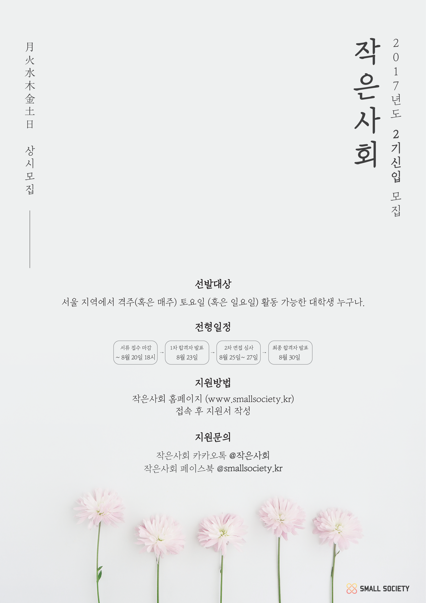

1. 모집대상 : 격주(혹은 매주) 토요일(혹은 일요일) 활동 가능한 대학생 누구나. (졸업 후 5년 이내 포함)
2. 모집분야
가. 운영진 : 전략기획팀, 재무회계팀, 브랜드디자인팀, UI/UX팀, IT개발팀, 프로덕션팀
나. 작은모임 : 작은사색, 작은예술, 작은영상
3. 모집일정
- 서류 지원 마감 : 8월 20일 일요일 오후 6시
- 1차 합격자 발표 : 8월 23일 목요일
- 면접 심사 : 8월 25일 금요일 ~ 27일 일요일
- 최종 합격자 발표 : 8월 30일 수요일
4. 오리엔테이션 및 MT
- OT 일정 : 09월 02일 토요일
- MT 일정 : 09월 02일 토요일 – 09월 03일 일요일 (1박 2일)
- 유의사항 : 오리엔테이션 및 엠티는 필참. (불참시 합격 취소)
5. 지원방법
- 작은사회 홈페이지 ‘지원하기’ 탭 클릭 후 지원서 제출.
- 지원 마감 3일 전까지만 접수 문자가 발송되므로 이른 제출 권장.
6. 활동일정
가. 운영진
∙ (의무사항) 최소 6개월 이상 활동 (활동 연장 권장)
∙ (정기회의)
- 작은모임 없는 주 : 토요일 오후 3시 – 오후 6시 (시험기간 제외)
- 작은모임 있는 주 : 부서별 회의 일정 추후 논의 (시험기간 제외)
나. 작은사색, 작은예술
∙ (의무사항) 최소 6개월 이상 (활동 연장 권장)
∙ (정기모임)
- 활동시간 : 토요일 오후 4시 – 6시 (2시간)
- 활동날짜 : 09. 09. / 09. 23. / 10. 28. / 11. 11. / 11. 25. / 01. 13. / 01. 27. / 02. 03. / 02. 17.
다. 작은영상
∙ (의무사항) 최소 1년 이상 (추후 연장 가능)
∙ (정기모임)
- 활동시간 : 일요일 오후 3시 – 6시 (3시간)
- 활동날짜 : 09. 10. / 09. 24. / 10. 29. / 11. 12. / 11. 26. / 01. 14. / 01. 28. / 02. 11. / 02. 25. / 03. 11. / 03. 25. / 04. 08. / 05. 06. / 05. 20. / 06. 03. / 07. 01. / 07. 15.
8. 모집 문의
- 작은사회 카카오톡
@작은사회